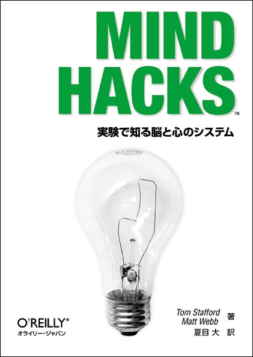
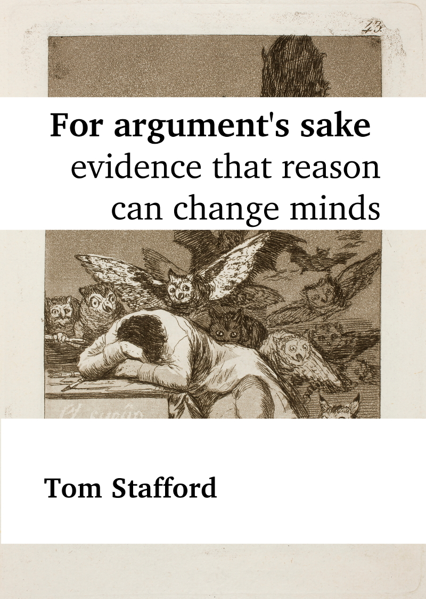

writing
For non-specialist audiences
Mindhacks

The DIY book for cognitive science. 100 things you can try at home which will teach you how the mind works.
“The authors have compiled a fascinating”collection of probes into the moment-by-moment works of the brain” … Mind Hacks allows you to test the theories of neuroscience on your own grey matter. If you’ve always wanted to get closer to your cerebellum but never plucked up the courage to take that DIY neurosurgery course, this is the book for you.” — The Guardian
“A wonderful annotated bibliography, with a light touch and hackish humour that inspires further reading.” — New Scientist
For argument’s sake: evidence that reason can change minds

Are we irrational creatures, swayed by emotion and entrenched biases? Modern psychology and neuroscience are often reported as showing that we can’t overcome our prejudices and selfish motivations. In this long essay (short ebook) I challenge this view. Re-analysing classic experiments on persuasion, as well as summarising more recent research into how arguments change minds, I show that the evidence is that persuasion by reason alone can be a powerful force.
Buy the book: Amazon, books2read (indie)
mindhacks.com
I helped run the mindhacks.com blog. It was active from roughly 2004 to 2020, and dedicated to psychology and neuroscience news and views.
“Mindhacks.com…surely the best popular psychology content anywhere, not just on the net” Ben Goldacre
“Riveting” Scientific American
BBC Future column
I wrote a regular column for the BBC, exploring the psychology behind some everyday phenomena.
The Conversation
My column at The Conversation consisted of critical reviews of neuroscience and psychology stories in the news.
Other writing
I also wrote the essays which intersperse the Rough Guide Book of Brain Training (2010). You can read about this Rough Guide on mindhacks.com, and there is one of the cut chapters.
I have written an ebook on psychology, morality and the nature of stories: The Narrative Escape (2010). I have published two free ebooks Explore Your Blind Spot and Control Your Dreams (both December 2011).
I have written magazine articles, including an article on confabulation and creativity for Prospect magazine: Tall Stories; this on creativity and games for Rattle; and one on small world theory and social networks for Now Then magazine (available here). I come top of a google search for “psychology + coffee” because of this article Psychology in the Coffee Shop, published in the Psychologist magazine.
I wrote a chapter for Christian Nold’s Emotional Cartography, and I gave a talk at the book launch which started ‘There is a saying that those who want to enjoy laws and sausages should not find out how they are made. I think the same is true about facts’.